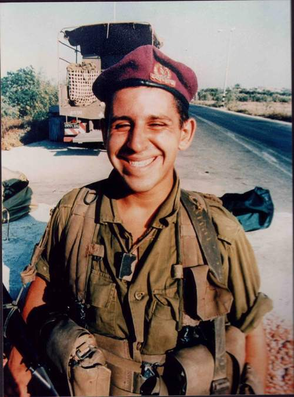
✦ ✦ ✦
חייל בגדוד שקד, נפל בצומת ״יהודה״ — גוש קטיף
בן עשרים שנה, לנצח בלבנו
יהודה נולד ב-1 לספטמבר 1976, בבית החולים רמב"ם בחיפה. הוא גדל והתחנך בעיר קריית אתא, בשכונת יוסף טל. בשנת 1978 עברה המשפחה לשכונת בן גוריון, עד לשנת 1994.
בשנת 1994 התגורר יהודה עם משפחתו באופן זמני במרכז קריית אתא, ומאז מאי 1995 עברה המשפחה לביתה בגבעת רם — שאת הבית הזה הספיק יהודה להכיר שנה אחת בלבד.
יהודה אהב מאוד כדורגל, היה אוהד מושבע של מכבי חיפה. בילדותו אהב מאוד את הים, ובכלל כל מה שקשור במים. בגילאים צעירים היו ליהודה אוספים שונים — מכוניות מירוץ ומחקים.
פלוגת אוגוסט 95 — שקד. מאורעות ״ברזל לוהט״, 26.9.96. צומת ״יהודה״ — גוש קטיף.
מורשת קרב זו שונה ממורשות הקרב של חטיבת גבעתי מ-48 ״מלחמת העצמאות״ בכך שהיא התרחשה בתקופתינו ועל חיילים בשירות סדיר.
היא כוללת בתוכה סיפור מופלא של פלוגה, על אחוות לוחמים, הקרבה למען המדינה, הגנה על אזרחי המדינה ומשמעת ברוח המפקד.
במוצאי יום כיפור 23/9 נפתחה ע"י ממשלת ישראל מנהרת החשמונאים בירושלים ללא הודעה מוקדמת ובחשאי.
פתיחת המנהרה הייתה הניצוץ שהביא להתפוצצות של אבק שריפה שהלך ונערם יחד עם המתח שגאה בעקבות חילופי השלטון בישראל ואי רצונה של ממשלת נתניהו לממש את הסכם חברון שנחתם בהסכמי אוסלו.
במדינה שרר מתח שנבע מאזהרות הפלסטינים מהתפוצצות שעלולה לקרות.
ההנהגה הפלסטינית כל הזמן מחממת את האוירה ע"י שידורי תעמולה באמצעי התקשורת הפלסטיניים וכן ע"י פעילים בשטח שמחממים את התושבים במטרה להוציאם לרחובות.
ביום רביעי 25/9 מתרחש קרב יריות בין כוחותינו לבין שוטרים פלסטינים ברמאללה.
הפלסטינים כנראה תכננו את הקרבות ונערכו בהתאם ע"י הצבת צלפים והן ע"י תיגבור עמדות בשוטרים ובמקלעים.
בלילה שבין 25/9 ל-26/9 המ"פ סרן בוני מזר מקבל פקודת התראה והגברת כוננות בעקבות כל מה שתואר להלן.
מפק הפלוגה סרן בוני מזר מכנס בשעת לילה מאוחרת את הקצינים מ"מ 1 אופיר, מ"מ 2 גילי חזני, מ"מ 3 איהב חלבי והסמ"פ יגאל חלמיש, ע"מ לחלק פקודות כוננות בכוונה לתגבר את כוחות הכוננות ולחלק משימות לכוחות הכוננות.
משימת מח' 1: לתפוס את צומת טנצ'ר יום חדש ומוצב 49.
משימת מח' 2: תיגבור כפר דרום ותפיסת צומת הגוש, מאחזים 51 ו-135.
משימת מח' 3: תפיסת מוצב אלון, תיגבור מוצב 51 בצומת הגוש.
המ"מים מתפזרים עם שחר למשימותיהם לאחר לילה ללא שינה.
בערך ב-7:00 נשמעים בקשר דיווחים על התקהלות אלפי אנשים בכפר דרום ועל יריות של פלסטינים על הישוב ועל כוחותינו ועל כך שיש פצועים מקרב חיילי מג"ב.
מ"מ 2 מקבל בקשר פקודה מהמ"פ לקפוץ יחד עם צוות הכוננות שלו למוצב כפר דרום ע"מ לתגבר ולאבטח את המוצב.
בשעה 7:30 מקפיץ המ"פ את כל הפלוגה ע"פ פקודת הכוננות כל כח למשימותיו.
בערך ב-7:45 נשמעים ע"י חייל מחלקה 2 יהודה לוי ז"ל שנמצא ב-135 בצומת הגוש דיווחים קרי רוח על התקהלות סביבו וזריקת אבנים ובקת"בים על האורחן ועליו.
בשלב זה נסגר צומת הגוש לתנועת אזרחים לחלוטין, המ"פ מגיע לשם עם החפ"ק ומדווח שהכל תחת שליטה.
מ"מ 2 מיד לאחר ששמע את הדיווחים של יהודה מארגן כח מפלוגה אחרת לאבטח את מוצב כפר דרום ונוסע עם הכח שלו לצומת הגוש. לפחות 15,000 מתפרעים מקיפים את האורחן באיזור הצומת עצמה וזורקים אבנים ובקת"בים על האורחן ועל כוחות הפלוגה שנערכו ביישור קו עם הג'יפים ע"מ למנוע מהמתפרעים מעבר לאיזור ציר אלרנס שמאפשר את הכניסה לגוש.
אט אט זורקי האבנים מתקרבים יותר ויותר עד לטווח יריקה אך הכח מפלוגת אוג' 95 מגיב בהתאם לפקודות הפתיחה באש באמצעי לפיזור הפגנות (אלפ"ה) בלבד ומבצעים ירי אך ורק כשנשקפת סכנת חיים קרי בקת"ביסטים ובעלי נשק חם, ולכן המפגינים אוזרים אומץ ומתקרבים כשלפתע נפתחת אש מבין על המפגינים על הכח.
בשלב זה מתוגברת הפלוגה בצומת ע"י כח הנדסה מפלוגת הליווים. לאחר זמן מה כח מג"ב עוזב למשימות אחרות ובצומת נשארים כח ההנדסה והכח מפלוגת אוג' 95.
פקודת האש של המפקדים הייתה: פלסטיני שמזהים אותו ודאית עם בקת"ב או נשק ניתן לבצע עליו ירי מכוון בלבד ואילו על המפגינים שזורקים אבנים יש לבצע אלפ"ה בלבד ואין ירות עליהם.
בשלב זה קרב היריות הופך לתופת רותחת של אש כשלכל הכח למעשה זו הפעם הראשונה תחת אש רציפה.
יהודה נמצא על מגדל 135 שמושך אליו אש היות והוא גבוה. לכח קשה לזהות מהיכן יורים מכיוון שהירי על הכח מתבצע מבין הבתים ומבין האזרחים, יהודה מזהה ומשיב אש בקור רוח.
במהלך הירי מקבל בוני כדור בזרוע, אך בוני היה בטוח שזו אבן מכיוון שזורקי האבנים היו קרובים מאוד. החופ"ל (חובש פלוגתי) חובש אותו והוא ממשיך בתפקודו כאילו לא פגע בו דבר כאשר הוא מייחס את הכאבים החזקים ל"אבן" שפגעה בו.
יהודה חש בבעיה ומזהה לכח למטה מהיכן יורים עליו. בוני שלא מבין — שואל אותו שוב.
יהודה מבין שהכח למטה לא מזהה ולכן הוא עומד להיפגע ותחת האש הוא מתרומם מעל המחסה ע"מ שהכח יראה אותו וישמע בצורה ברורה, הוא חושף את עצמו תוך הפגנת אומץ לב ומזהה לכח מהיכן יורים עליו. הכח מזהה ומנטרל.
מתוך התופת פוגע בו כדור אחד בלב, הוא נופל אחורה ומתמוטט מיד.
כאשר מ"מ 2 שומע צעקות שיהודה נפגע הוא רץ לאורחן ונכנס פנימה. מ"מ 2 רץ למעלה מהר תוך שהוא מדרבן את החובש ע"מ להגיש טיפול ולחלץ את יהודה.
יהודה שעדיין חי מורם ע"י מ"מ 2 שנושא אותו אחד על אחד ומוריד אותו תחת אש הפלסטינים ובחיפוי חיילי הפלוגה למטה אל הרופא.
הרופא בתום בדיקתו המעמיקה מודיע למ"מ 2 שיהודה איבד את חייו.
המפקדים מזועזעים קשות, ולחבריו לנשק ע"מ לא לפגוע במורל הם מדווחים שיהודה נפצע אנושות והוא פונה ע"י הרופא לטיפול בתאג"ד (תחנת איסוף גדודית).
לאחר מכן מגיעה החצצית בפיקוד הסרס"פ אבי שמנסה לפזר באמצעותה את המפגינים. לאחר שהפלסטינים מזהים אותו הם ממקדים חלק מהאש אליו, אבי חוטף כדור בקסדה בצד שמאל, הכדור ניתז מהקסדה החוצה, אחר כך הוא חוטף עוד כדור שפוגע בחצצית ניתז למעלה חותך את גבתו ויוצא מתוך פנים הקסדה החוצה באיזור מרכז הראש. למרות כל הפגיעות הללו אבי לא נרתע וממשיך לדבוק במשימתו — פיזור המתפרעים, באומץ לב ובנחישות נדירים.
בוני המ"פ מחולץ לאחר שאבן פוגעת בראשו. חלמיש הסמ"פ ע"מ לא לפגוע במורל חייליו מחלץ את עצמו לבד מהג'יפ ולמרות פציעתו הקשה הוא מגיע בחיוך רחב לחובשים בנקודת הפינוי, אומר לכולם שלא קרה כלום ומשרה אוירה נינוחה ורגועה סביבו למרות הכדור שחטף.
אף על פי שהמ"פ והסמ"פ פצועים, החיילים נשארים נחושים ואיתנים ברוחם לבצע את משימתם וממשיכים בתפקודם המצויין ברגעי מבחן קשים אלו בדיוק כפי שחונכו באימונים.
מ"פ — נפגע קל מכדור ביד ואבן בראש.
סמ"פ — נפגע קל מכדור ברגלו.
חייל שגיא גולדנברג — נפגע קל מכדור בידו.
חייל יהודה לוי ז"ל — הרוג.
סופו של דבר מה שמחזיק את חיילים ומפקדים בשעות הקרב זאת המשמעת שמונחלת לחיילים יום יום שעה שעה בשגרה, ואחוות הלוחמים שנבנית יום יום כשהחיילים חיים אחד צמוד לשני וכשהם מזיעים יחד במסעות תחת האלונקה.
אחוות לוחמים שבגללה יהודה חשש לחיי חבריו יותר מאשר לחייו שלו ולכן הזדקף באומץ והצביע על האויב.
אחוות לוחמים שבגללה אבי הסרס"פ הסתער עם החצצית על זורקי האבנים והבקת"בים למרות שקיבל שני כדורים לקסדה וריקושט שפגע בכתפו ואותו גילה רק בלילה שהוריד לראשונה את החולצה.
אחווה שבגללה גם לאחר שהמ"פ והסמ"פ נפצעים הפלוגה ממשיכה בדבקות במשימתה.
נכתב לזכרו של החייל סמל יהודה לוי ז"ל, ע"מ שאומץ ליבו ועוז רוחו יהוו דוגמא ומופת לחיקוי ואבן דרך בולטת בדרך הארוכה שעושים חיילי גדוד שקד וחטיבת גבעתי בדרך אל השלום.
דברי פרידה, אהבה וזיכרון שנכתבו בידי יקיריו ולוחמי פלוגתו של יהודה. לחצו על כל כרטיס לקריאת ההספד המלא.
כל שנה, ב-26 בספטמבר, מתקיים טקס אזכרה לזכרו של יהודה.
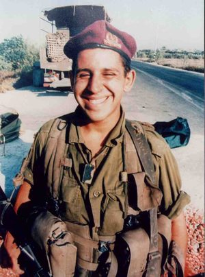
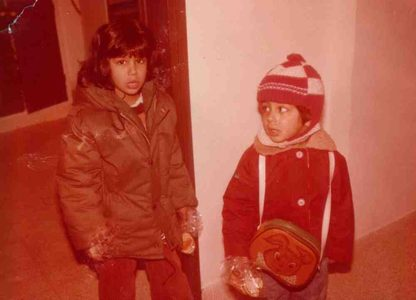
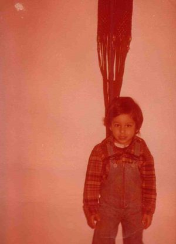
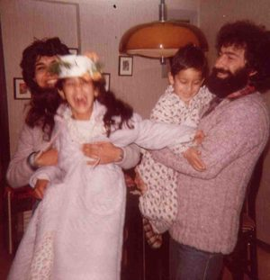
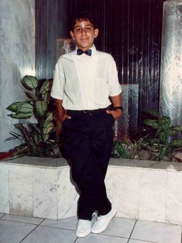
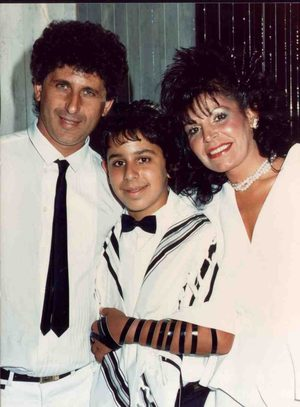
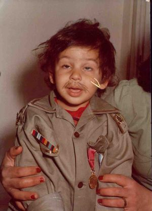
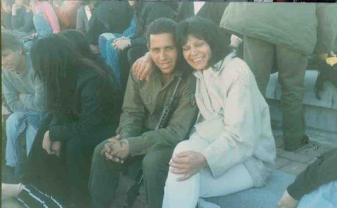
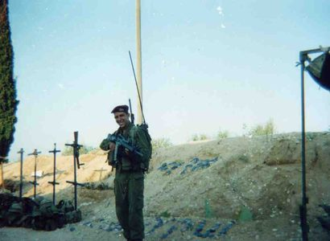
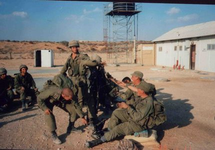
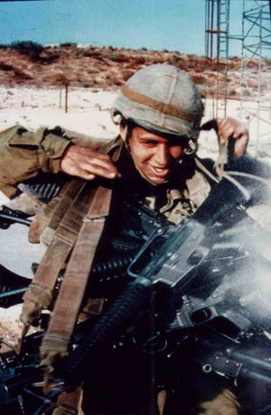
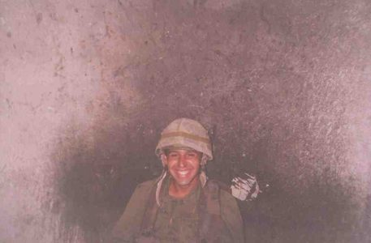
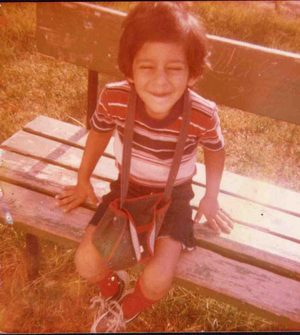
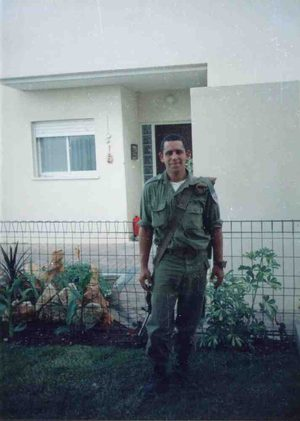
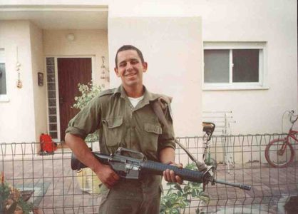
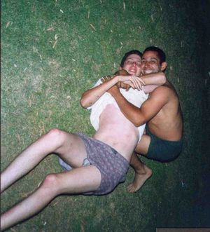
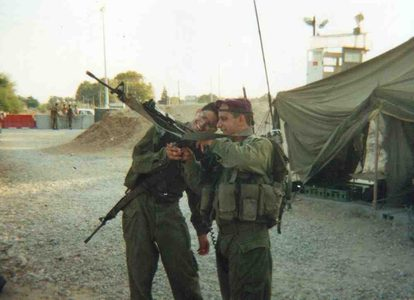
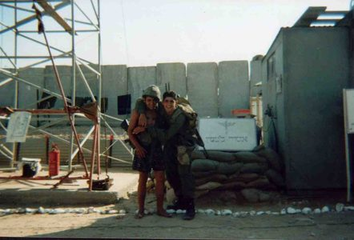
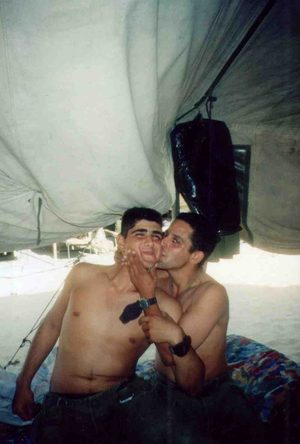
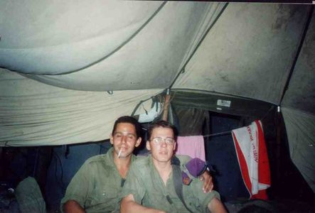
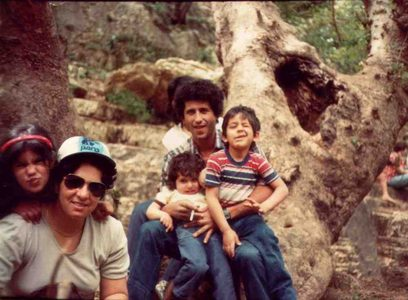
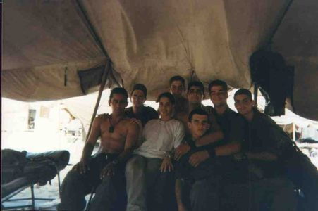
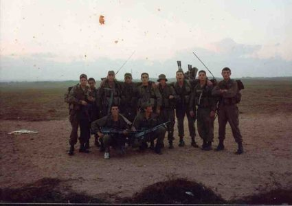
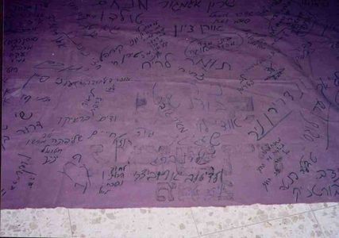
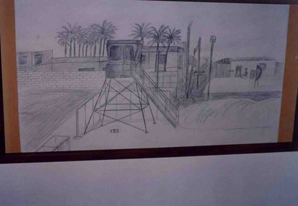
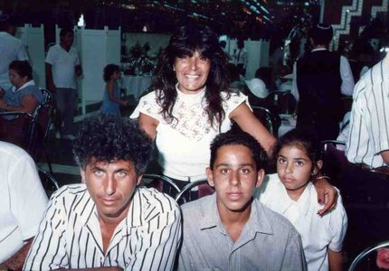
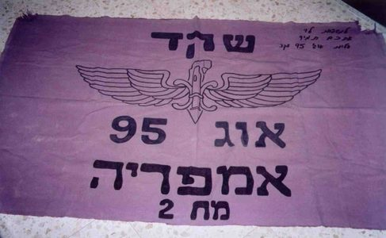
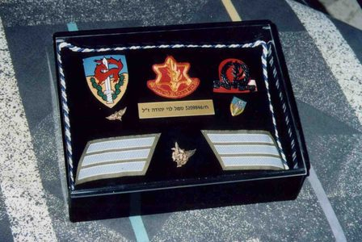
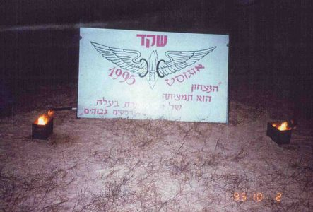
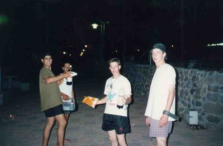
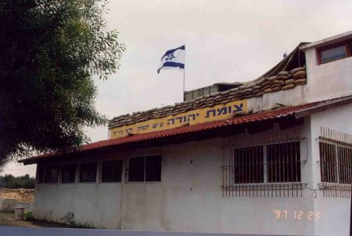
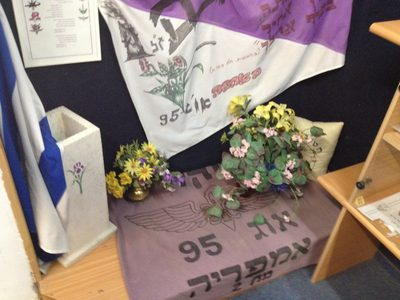
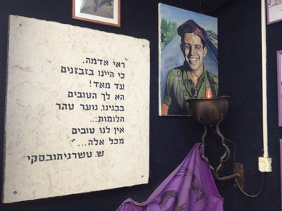
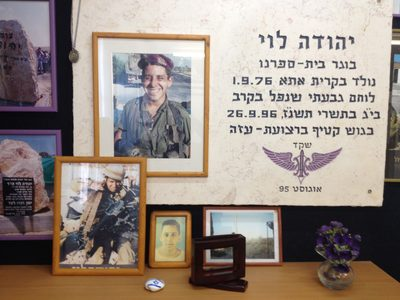
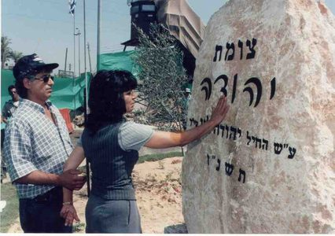
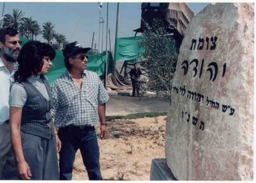
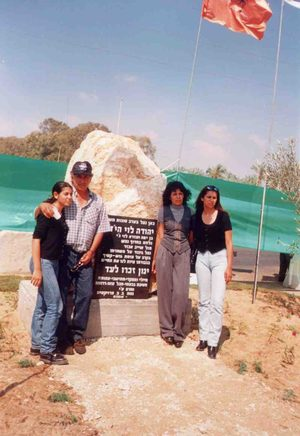
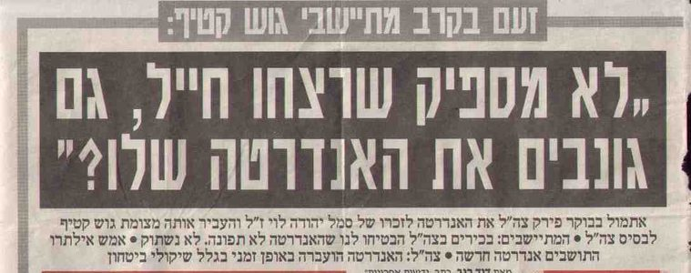
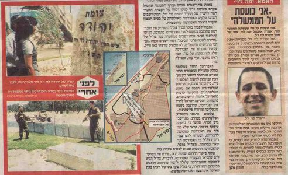
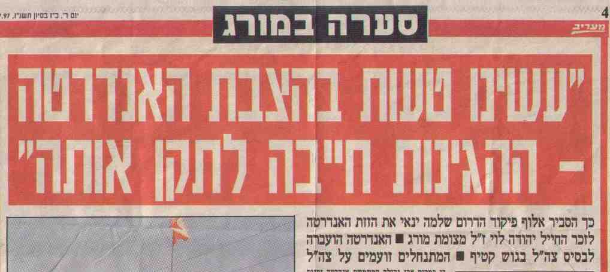
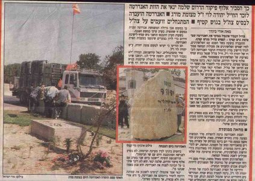
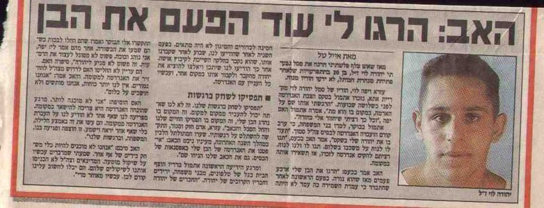
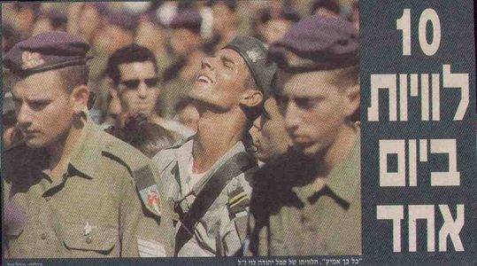
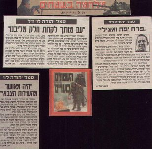